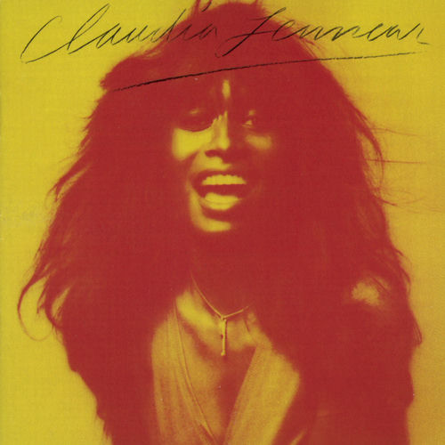

Claudia Lennear
Claudia Lennear is an American soul singer and educator. Lennear began her performing with the Superbs before becoming an Ikette in the Ike & Tina Turner Revue. She was also a background vocalist for various acts, including Joe Cocker, Leon Russell, and Freddie King. She released her only solo album in 1973. Lennear was featured in the 2013 Oscar-winning documentary 20 Feet from Stardom. She was inducted in the Rhode Island Music Hall of Fame in 2019.
Complete Discography & Tracklists (1)